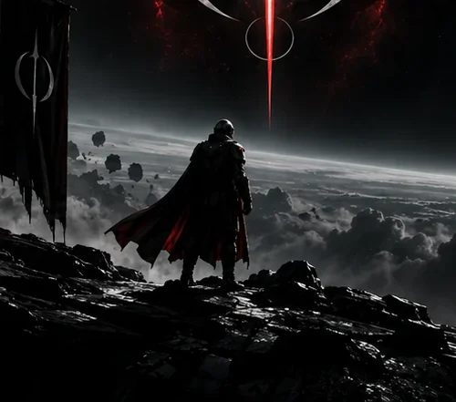
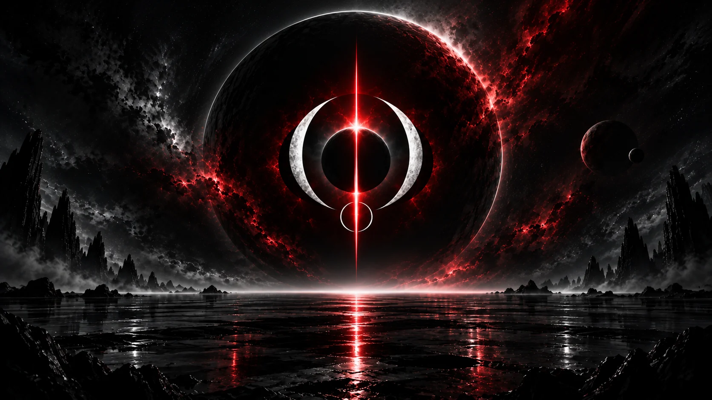

Acte II
Rien ne dure,
et c'est très bien ainsi
Les vaisseaux brûlent. Les cargaisons se perdent. Les équipages se dispersent. Ce qui reste, c'est la manière dont on s'est tenu pendant que ça arrivait.
L'Ordre du Néant ne court pas après le nombre. Nous recrutons lentement, nous structurons soigneusement, et nous attendons des gens qu'ils soient réellement présents. Une corpo de quatre cents membres dont douze se connectent ne vaut pas vingt pilotes qui répondent quand on les appelle.
Nous jouons en français, entre adultes, sans exiger d'exclusivité. Vous pouvez garder vos autres organisations. Nous ne sommes pas possessifs, nous sommes exigeants.
Acte III
Huit divisions
Chaque division a ses salons, ses référents et ses opérations. Vous en choisissez librement, la plupart des membres en suivent deux ou trois.
-
01
Logistique
Convois, fret, chaînes d'approvisionnement, escorte de cargo.
-
02
Extraction
Minage de surface et d'astéroïdes, prospection, cycles de raffinage.
-
03
Combat
Contrats de primes, escadres ERT, défense des intérêts de l'Ordre.
-
04
Sécurité
Escorte de convois, protection de sites, patrouilles et dissuasion.
-
05
Exploration
Reconnaissance, relevés, expéditions longues hors des routes connues.
-
06
Médical et sauvetage
Médecine de terrain, récupération d'équipages, appui aux opérations.
-
07
Ingénierie
Postes multi-équipage, récupération d'épaves, réparation en vol.
-
08
Industrie
Négoce, production, marché interne entre membres.
Acte IV
L'ascension
Six échelons. Les trois premiers s'obtiennent par la présence, les suivants sont conférés par le commandement. Rien ne s'achète, rien ne se demande.
-
Adepte
Dossier validé, entrée prononcée. Accès à l'ensemble des salons opérationnels.
-
Paladin
Ouverture de fils de discussion. Franchi par l'activité.
-
Sentinelle
Fils privés et table de sons en vocal. Franchi par l'activité.
-
Ange
Droit d'inviter au nom de l'Ordre. Franchi par l'activité.
-
Archange
Organisation d'événements, pseudonyme libre.
-
Séraphin
Parole prioritaire, droits maximaux.
Acte V
La Vigie
Ce que le serveur de l'Ordre dit de lui-même, relevé à l'instant. Rien n'est saisi à la main : tout vient des rôles portés sur le Discord.
- — Membres reçus
- — En ligne
- — En vocal
- — Divisions pourvues
Salons occupés
Registre de l'Ordre
Acte VI
Les opérations
Annoncées à l'avance, avec ordre de mission et inscription d'équipage. Le partage des gains est écrit avant le départ.
Acte VII
La galerie
Captures d'opérations, de convois et d'expéditions. Le verse tel que l'Ordre le traverse.

Acte VIII
La Règle
Ce que nous demandons
- Dix-huit ans révolus.
- Parler français. Les opérations se mènent en français.
- Se montrer de temps en temps. Un membre qui n'apparaît jamais n'est pas un membre.
- Lire la Règle avant d'entrer. Vingt-neuf articles, aucune surprise.
Ce que vous trouverez
- Des opérations annoncées à l'avance, avec ordre de mission et inscription d'équipage.
- Un partage des gains écrit avant le départ, pas négocié après.
- Des salons vocaux et textuels personnels pour vos propres équipages.
- Un commandement qui répond.

Acte IX
Entrer dans l'Ordre
Nous sommes une organisation jeune, encore réduite. Si vous préférez compter parmi les premiers plutôt que d'être le quatre-centième nom d'une liste, le moment est maintenant.
- 01Le sas d'admission vous accueille
- 02Vous déposez un dossier
- 03Un officier l'instruit et prononce votre entrée
Pas encore le jeu ?
Star Citizen s'achète sur le site officiel. En créant votre compte par notre lien, vous recevez 5 000 UEC de bonus au démarrage et l'Ordre marque un point. Cela ne vous coûte rien de plus.
Créer un compte Star Citizen